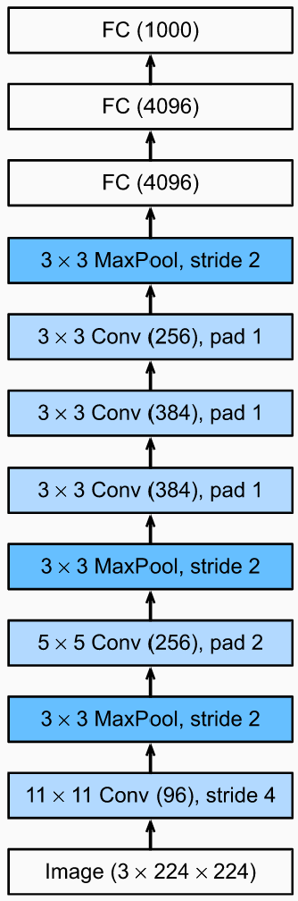
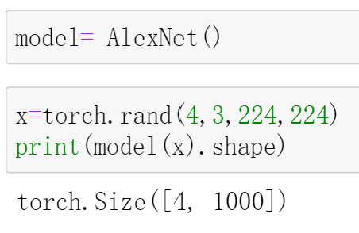
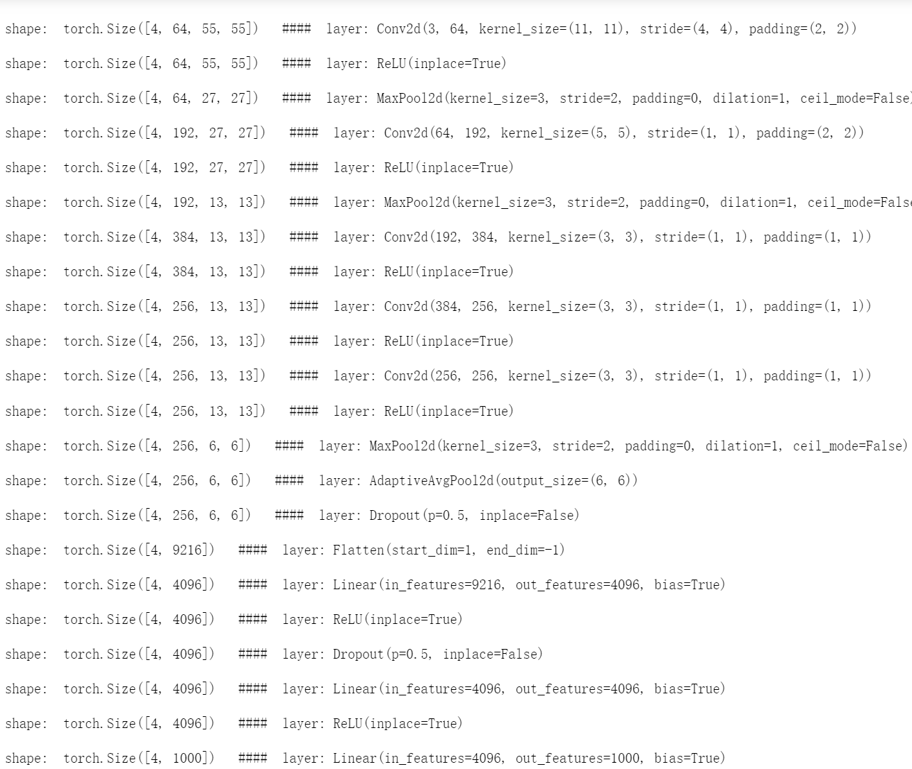

AlexNet
在2012年的Imagenet竞赛中，AlexNet以低于第二名10.8个百分点的top-5错误率赢得了冠军，自此以后，基于CNN的图像分类算法开始流行起来，深度学习时代到来了。

AlexNet的网络结构如上图所示。相比于之前的LeNet-5，AlexNet堆叠了更多的卷积块，从而网络更深。同时，它还引入了Dropout的技巧，以及ReLU激活函数等。
在AlexNet刚被提出时，受限于当时的算力，作者采用了多个GPU进行训练。而随着技术的发展，现在的算力已经可以在单卡上训练AlexNet了，且显存绰绰有余。
更多细节，将在代码实现中体现。
PyTorch 实现AlexNet
代码实现时，去除了现在已经很少被使用的LRN(局部响应归一化)；并且将最后一个池化层由最大池化改为自适应平均池化，这种池化方法可以将不同尺寸的输入图片固定到特定尺寸，于是就可以固定住该池化层后面紧挨着的第一个全连接层的参数（最后一个池化层到第一个全连接之间有一个flatten操作，由于池化层输出的尺寸是固定的，因此flatten后再输入到这个全连接层的神经元个数也是固定的），使用起来更加方便。
1 | import torch |
测试一下：

可以看到，对于输入的3*224*224的图片，经过AlexNet后，得到了1000维的向量。
那这中间的shape变化情况是怎么样的呢？我们可以看一下：
1 | all_layers=nn.ModuleList() |
输出信息便是shape每经过一层后的变化情况，如下：

参考：
I'm so cute. Please give me money.


- 本文链接：http://yoursite.com/2021/05/11/%E7%BB%8F%E5%85%B8%E5%8D%B7%E7%A7%AF%E6%9E%B6%E6%9E%84-AlexNet/
- 版权声明：本博客所有文章除特别声明外，均默认采用 许可协议。